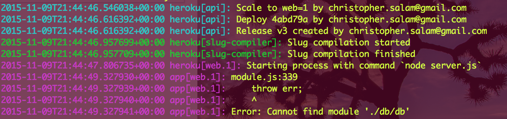

connecting node & neo4j
This post is part 4 in a 4 part series. Read the other posts:
Part 1 - Try Neo4j | Part 2 - Query Neo4j | Part 3 - Collisions | Part 4 | Repo | Site
This post addresses a major struggle we had with this project. Within 4 days we were able to build a neo4j database accessing our local database to produce connections and render them to the screen... on localhost. We did not realize that the journey towards hosting the site would take another month (and have to be worked on in the midst of two other projects, i.e. on Sunday or 12pm-2am was the only time we had to work). The main challenge for me was a fundamental learning curve with Nodejs and Neo4j and using two techologies to make this process work with Heroku.
1. Graph Story, a company that provides instructions for a neo4j instance on heroku (and other hosting services, I'm sure)
2. Seraph, a tiny library written to allow neo4j to render to the client and dodge CORS (cross origin resource sharing) conflicts.
I wanted to snippets from the code here and hopefully prevent slowdown for future neo4j experimenters.
When I got started I scoured the internets for information on how to get going on Graph Story. Literally the only example of Graph Story key access for NodeJS was provided in a gist written by Graph Story's CEO, Jeremy Kendall. I later spoke with him on the phone after I was at a high point of frustration, and he said to me words I'll always remember,
How long have you spent on this... 16 hours?
That makes you the expert.
At that moment I realized that this would be the first of many moments I would have to figure out my own solution. Here's what was cobbled together.
Graph Story's Database key looks alot like Jeremy's Gist. Here's what mine database key using seraph looked like (a db.js file in a db folder) looked like:
var db_url = "https://neo-xxxxxxxxxxxxx-xxxxxxxx.do-stories.graphstory.com:7473",
//var db_url = localhost:7473
dbRemote = require("seraph")({
server: db_url,
endpoint: "/db/data",
user: "xxxxxxxxxxxxxx",
pass: "xxxxxxxxxxxxxxxxxxxxxxxxxxxxxxxxx"
});
exports = module.exports = dbRemote;
The commented line you may need as you set up the application. I set up a local database on my computer on 7473 before setting up a working database on the graph story. The process for either are identical.
The server itself accessed this key.
//server.js
"use strict";
/*=======================================|
| Call in express and other node_modules |
|=======================================*/
var express = require('express'),
bodyParser = require('body-parser'),
dbRemote = require('./db/db.js'),
app = express(),
There's lots of different things we need to do to make our files work and be hidden on source control (such as our actual DB key above), which I may do a separate post on. Here's the code behind setting up a port for the site.

The trickiest thing is accessing this db file and sending it up on heroku but gitignoring it and not sending it to Github. It sounds so elementary, but you'd be surprised how often you'll mess this up at first. When having problems with this task, be sure to use Heroku Logs, it's a very helpful command.
/*=======================================|
| Sets port to environment port |
| or local port |
|=======================================*/
var port = process.env.PORT || 7473;
process.env.PORT is the name of the host IP on Heroku, and on Microsoft Azure as well. For Neo4j the default host is 7473, and the || structure let's us host the site on our computer or on Heroku without having to modify our files.
/*=======================================|
| connecting the client and server |
| allows for CORS (cross |
| origin resource sharing) |
|=======================================*/
app.use('player', function(req, res, next) {
res.header("access-control-allow-origin", "*");
res.header("access-control-allow-headers", "Origin, X-Requested-With, Content-Type, Accept");
next();
});
// support json encoded bodies
app.use(bodyParser.json());
// support encoded bodies
app.use(bodyParser.urlencoded({
extended: true
}));
This is super crucial. Without this line, you'll end with 500 errors.
We need to send out the static files
/*========================================|
| statically serves files from |
| the client directory |
|========================================*/
app.use('/node_modules', express.static(__dirname + '/node_modules'));
app.use(express.static(__dirname + '/public'));
Node gives us dirname, which is helpful for serving out the correct url, similar to the process behind process.env.PORT.
At this point, we have enough code in this server to run seraph layered node code to pull down information from our database. This log will show up in your node log. This test is commented but it was the first clue I was on the right track.
/*========================================|
| Test |
|========================================*/
dbRemote.queryRaw("MATCH (n:Player) RETURN n LIMIT 1", {}, function(err, result) {
if (err) throw err;
console.log("Query is working")
});
We are finally getting to Routes, which is the most important part of the node file. within the app.post that corresponds to your controller which sends the same url, you can place any database query. For using queryRaw, which lets you process raw Cypher queries, we just need to catch the request and send the result returned by Seraph/Node/GraphStory and your Database. Pretty cool!
The commented code below is some of the work I'm doing for a wikipedia call that will show images of the NBA player or coach called up. I'll add it when it's ready.
/*========================================|
| ROUTES |
|========================================*/
app.get('/', function(req, res) {
res.location('/public/index.html');
});
app.post('/player', function(req, res){
dbRemote.queryRaw(req.body.query,{}, function(err, result){
if (err) throw err;
res.send(result);
});
});
// app.post('/picture', function(req, res){
// // console.log(req.body);
// var str = req.body["data"];
// res.send(str);
// });
And to finish up the server file, let's call up the listener.
/*=======================================|
| Calling the server |
|=======================================*/
app.listen(port, function() {
console.log('Tip off on port', port);
});
exports = module.exports = app;
Pretty cool! I'm excited to expand this site, and add other queries. This same structure will guide the rest of the site. Another really exciting thing is extending these structures in React Native or future frameworks built on top of Mac iOS XMLHTTPrequest that don't have CORS issues means that the code above minus the listener and the "access-control-allow-origin" section will be sufficient. For traditional web applications as of HTML5, we will need to write our client to receive the call. Here's how I processed it.
//within the public/client files
//within the Angular controller
/*==================================|
| This calls the server which goes |
| to the DB and returns our query |
|==================================*/
$http({
method:"POST",
url: '/player',
accepts: "application/json",
datatype:"json",
data: { "query" : query },
error:function(jqxhr, textstatus, errorthrown){
console.log("error",query,errorthrown)}
}).then(function(response) {
console.log(response.data.data);
The key points here is the url should match. I will eventually process multiple queries here. Additionally, the response.data.data was a really tricky strange quirk. Hope this was helpful!
This is a stub, there's more coming